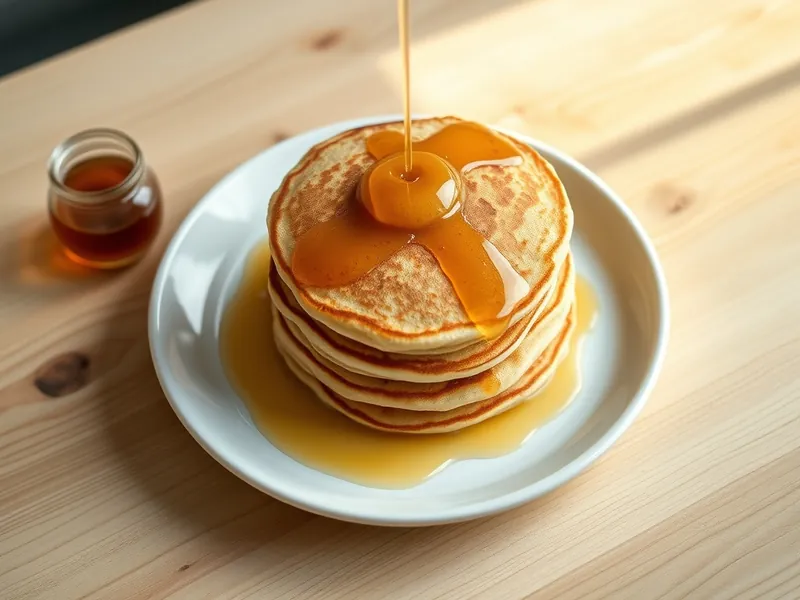

Американские панкейки на молоке
Толстые пышные блинчики на разрыхлителе, которые жарят на сухой сковороде
30 мин3 порц.412 ккал на порциюБ 12 · Ж 13 · У 61Американская кухня
Открыть в приложении: порции, таймеры, список покупок
Продукты на 3 порц.
- Мука пшеничная1,3 стак.
- Молоко250 мл
- Яйцо куриное1 шт
- Сахар2 ст. л.
- Разрыхлитель2 ч. л.
- Сливочное масло30 г
- Соль1 щеп.
- Мёд по желаниюпо вкусу
Как готовить
- Растопите сливочное масло и немного остудите.
- Взбейте яйцо с сахаром и солью, влейте молоко и масло, перемешайте.
- Смешайте муку с разрыхлителем, всыпьте в жидкую часть и перемешайте до исчезновения сухих комочков, 30 секунд. Мелкие комочки оставьте.
- Дайте тесту постоять 10 минут: оно станет пышнее.
- Разогрейте сухую сковороду с антипригарным покрытием на среднем огне. Налейте 2 столовые ложки теста кружком.
- Жарьте 1,5-2 минуты, пока на поверхности не появятся лопающиеся пузырьки, переверните и жарьте ещё 1 минуту до золотистого цвета.
- Сложите панкейки стопкой и полейте мёдом.
Совет. Не вымешивайте тесто долго: от этого панкейки становятся резиновыми. Масло на сковороду не наливайте, иначе цвет будет пятнистым.